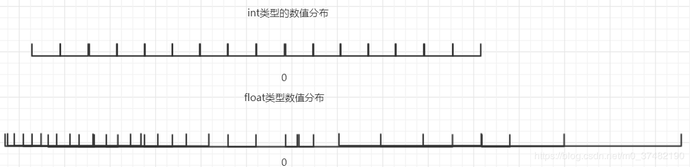
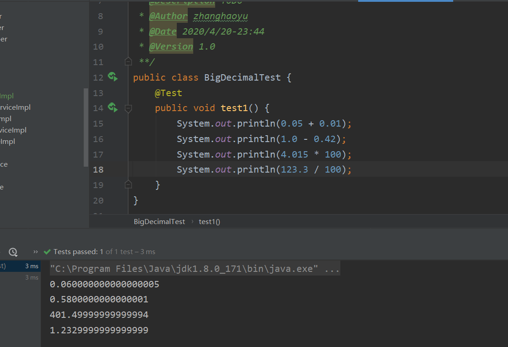
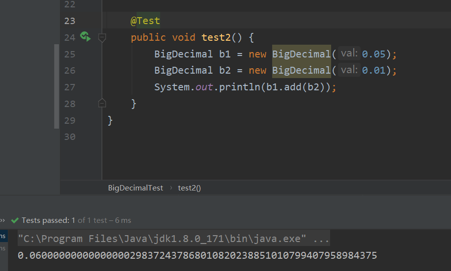

1.解决浮点型商业运算中丢失精度的问题
分析原因
我们知道整数类型没有精度丢失的问题，但是浮点数有精度丢失的问题，下面我们来探究一下其精度丢失的原因所在。
浮点数，分单精度（float）和双精度（double）：
float ，介于 -3.402823e38 和 +3.402823e38 之间的32位数字；
double ，介于 -1.79769313486232e308 和 +1.79769313486232e308 之间的64位数字；
我们知道，计算机只识别 0 和 1，所以数值都是以二进制的方式储存在内存中的。
所以要知道数值在内存中是如何储存的，需先将数值转为二进制
根据 IEEE 754 标准，任意一个二进制浮点数 V 均可表示为：V = (-1 ^ s) * M * (2 ^ e)。
其中 s ∈ {0, 1}；M ∈ [1, 2)；e 表示偏移指数。
具体浮点数的 IEEE 754表示方法在我之前的博客有所讲解，不清楚的可以查看，这里就不解释了。
精度丢失原因
首先计算机进行的是二进制运算，我们输入的十进制数字会先转换成二进制，进行运算后再转换为十进制输出。Float和Double提供了快速的运算，然而问题在于转换为二进制的时候，有些数字不能完全转换，只能无限接近于原本的值，这就导致了在后来的运算会出现不正确结果的情况。
我们先探究一下int 和 float同样都是用32位表示，但是为什么float范围就比int大很多呢？
int取值范围：-2147483648~2147483647，远远不足float： -3.402823e38 ~+3.402823e38
我们知道int数值是连续且等分的，而float数值是跳跃的，并且间隔不一定相等。都是用32位表示，也就是说int和float可存储数值的最大数量是相等的，为2的32次方。
文字理解有点抽象，下面我们上图来看

大概意思我们可以看到，在负数值范围内，float可以表示更加精确的数（图中较为密集的部分），但是在正数范围中，float表示的就不如int精确了，并且float数值不是等分表示的，这就造成了float的精度丢失。
这样应该就能理解浮点数精度丢失的原因了，其实最根本原因还是计算机只能采取二进制存储数据
普通测试
1 | public void test1() { |

如图所示，在进行加减乘除运算时，得到的结果并不是我们预期的结果，假设我们在电商项目内进行价格计算时就会出现问题，很有可能造成余额为 9.99999999999999，但是无法购买10元的商品。
使用Integer类型的BigDecimal构造器进行运算
1 | public void test2() { |

结果如图所示，结果也不正确，支付时也会出现问题。
使用String类型的BigDecimal构造器进行运算
1 | public void test3() { |
结果为0.06，正确